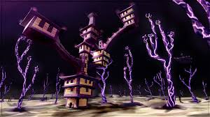

The End
O "The End" em Minecraft é uma dimensão final e única no jogo, acessível
através de portais especiais
encontrados em fortalezas. Aqui estão os principais
detalhes sobre essa dimensão:
MAPAS
CIDADE
As cidades do End são estruturas semelhantes a arranha-céus encontradas nas ilhas externas do End. Elas são habitadas por shulkers e guardam itens exclusivos .